Additional Questions
T/F
It is possible to know the exact Energy of a particle at specific time if m<<1.
False
Uncertainty Principle: ΔE Δt ≥ h
The wavefunction of a particle gives some information about the position.
True
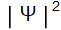 gives the probability of finding the particle at some position
Beta decay involves the nucleus loosing either protons or neutrons.
True
“Beta decay (β-decay) is a type of radioactive decay in which a beta ray (fast energetic electron or positron) and a neutrino are emitted from an atomic nucleus. For example, beta decay of a neutron transforms it into a proton by the emission of an electron, or conversely a proton is converted into a neutron by the emission of a positron (positron emission), thus changing the nuclide type.”
Takeaway: It looses one, which one it looses depends on the decay 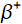→ proton transforms into neutron by emission of positron , → neutron transforms into proton by emission of electron)
The element has 12 neutrons in its nucleus.
False
Protons: Z=12
Atomic Mass: A=25
Neutrons = A-Z=13
Calculations
For an electron, using quantum numbers 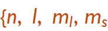}, if n=1,2,3,4,5 how many unique combinations exist?
110
Relationships:
l=0,...,n-1
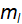=-l,...,0,...l
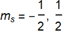
we could write the solutions by hand or utilize series to represent the number or states
Relationships:
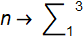
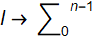
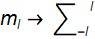
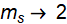
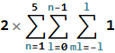
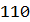
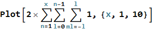
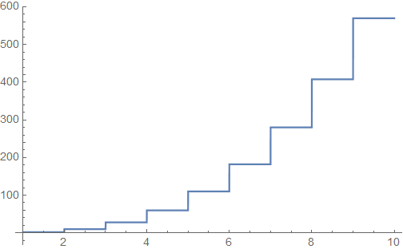
The galaxy EGS-zs8-1 lies 13.1 billion light-years from Earth, the largest distance ever measured between Earth and another galaxy (May 2015). How fast is this galaxy receding from earth?
Hubble’s law is a statement of a direct correlation between the distance to a galaxy and its recessional velocity as determined by the red shift.
Red Shift:
The light from distant stars and more distant galaxies is not featureless, but has distinct spectral features characteristic of the atoms in the gases around the stars. When these spectra are examined, they are found to be shifted toward the red end of the spectrum. This shift is apparently a Doppler shift and indicates that essentially all of the galaxies are moving away from us. Using the results from the nearer ones, it becomes evident that the more distant galaxies are moving away from us faster. This is the kind of result one would expect for an expanding universe. The red line of the spectrum below is the transition from n=3 to n=2 of hydrogen and is famous as the H-alpha line seen throughout all the universe.
Hubble’s Equation
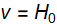d
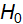=20.8 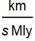
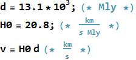
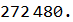